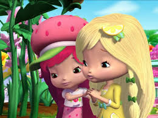
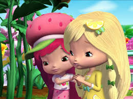

¿Quién ganará el Festival de la Flor de Primavera de este año? Ciudad Tutti Frutti está decorada con coloridas pancartas que proclaman el gran evento.
Durante semanas, Dulce de Limón ha regado sus violetas durante el día y les ha cantado por la noche, haciendo todo lo posible para ganar el primer premio.
¡Un día descubre que una de sus plantas de violetas ha desaparecido! Tiene el corazón roto.
 

| Amigo | Decoraciones |
|---|---|
| Rosita | Flores |
| Dulce de Limón | Fiesta |
| Violeta | Robo |